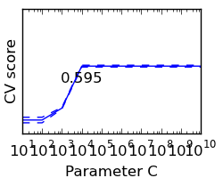

Cross-validation on Digits Dataset Exercise¶
This exercise is used in the Cross-validation generators part of the Model selection: choosing estimators and their parameters section of the Statistical-learning for scientific data processing tutorial.
Python source code: plot_cv_digits.py
print __doc__
import numpy as np
from sklearn import cross_validation, datasets, svm
digits = datasets.load_digits()
X = digits.data
y = digits.target
svc = svm.SVC()
C_s = np.logspace(1, 10, 10)
scores = list()
scores_std = list()
for C in C_s:
svc.C = C
this_scores = cross_validation.cross_val_score(svc, X, y, n_jobs=-1)
scores.append(np.mean(this_scores))
scores_std.append(np.std(this_scores))
import pylab as pl
pl.figure(1, figsize=(2.5, 2))
pl.clf()
pl.axes([.1, .25, .8, .7])
pl.semilogx(C_s, scores)
pl.semilogx(C_s, np.array(scores) + np.array(scores_std), 'b--')
pl.semilogx(C_s, np.array(scores) - np.array(scores_std), 'b--')
pl.yticks(())
pl.ylabel('CV score')
pl.xlabel('Parameter C')
pl.ylim(0, 1.1)
#pl.axhline(np.max(scores), linestyle='--', color='.5')
pl.text(C_s[np.argmax(scores)], .9*np.max(scores), '%.3f' % np.max(scores),
verticalalignment='top',
horizontalalignment='center',
)
pl.show()